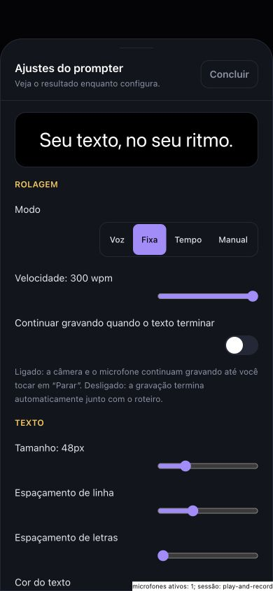
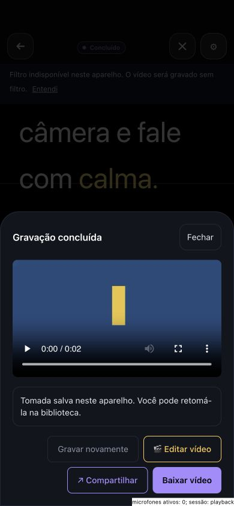
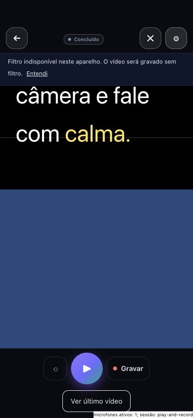
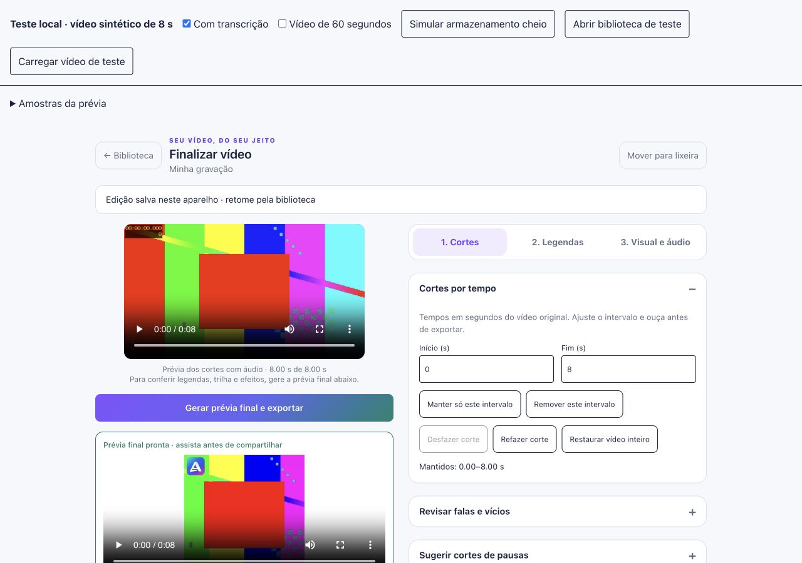
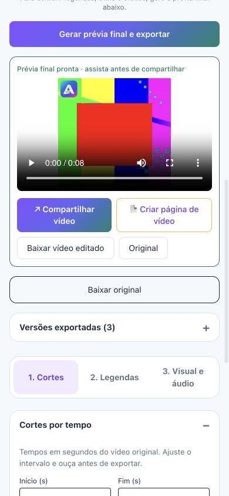

Atualização de distribuição — 16/10/2026: site, API e política publicados; Android 1.6.4 (22) enviado à análise na faixa de teste existente; Apple 1.6.4 (22) com upload concluído pelo Xcode. Processamento/grupo TestFlight e homologação física pendentes. O diagnóstico e as capturas abaixo registram a revisão local anterior ao envio.ALVOPROMPTER · 16/10/2026 · VERSÃO LOCAL 1.6.4 / 22
Edição recuperável, legendas por palavra e um fluxo mais claro
As correções do editor e da gravação foram implementadas e verificadas por testes automatizados e pelo navegador. O projeto guarda tomadas e versões, permite retomar a edição e oferece uma prévia final do arquivo com os efeitos aplicados.
Publicação permanece pendente. Os ensaios com câmera e sessão de áudio simuladas confirmam o comportamento do código. Alto-falante do iPhone, Bluetooth, áreas seguras nativas e exportações longas ainda exigem aparelhos físicos. A nova transcrição foi testada diretamente com o módulo do servidor e a Groq; não foi publicada nesta etapa.
1. Gravar e continuar
Ao terminar, a tomada é salva automaticamente neste aparelho, com acesso a editar, gravar novamente, compartilhar e baixar. Câmera e microfone são encerrados antes de preparar a reprodução. Nos ajustes, a prévia do texto tem espaço próprio; Concluir recebe foco, Escape fecha o diálogo e o foco retorna ao controle de origem.

390 × 844: prévia sem corte e ajustes com rolagem.
Botões do resultado com 44 px de altura. Câmera e microfone sintéticos; contador de microfones ativos chegou a zero.Tela cheia e área reservada ao sistema

Simulação de iPhone: controles em y = 55 px. Homologação física pendente.2. Cortar, revisar e retomar
O editor tem três etapas: Cortes, Legendas e Visual e áudio. Os intervalos são independentes das legendas, aceitam frações de segundo e têm desfazer/refazer. Original, cortes, histórico e configurações ficam vinculados à tomada e ao roteiro. Contas e espaços de trabalho têm escopos separados. A lixeira permite restaurar a tomada com suas versões.

1280 × 900. A barra superior pertence ao teste local.Armazenamento cheio foi simulado: o erro aparece, o original continua disponível para download e uma nova tentativa conclui após restaurar o armazenamento. Reabrir recuperou cortes, histórico, proporção, tema, texto revisado, logo, trilha e abertura. O salvamento é local ao aparelho; não constitui backup na nuvem.
3. Legendar com tempos reais
A transcrição solicita tempos por palavra à Groq e mantém a alternativa do Workers AI. É possível revisar o texto, selecionar uma palavra para ouvir e cortar seu intervalo e baixar SRT correspondente aos trechos mantidos. Reescrever uma frase não inventa tempos acústicos para o novo texto.
Teste real de fala sintética em português: HTTP 200, 15 palavras retornadas e preservadas. Uma sobreposição de 20 ms entre palavras expôs um caso corrigido e coberto pelos testes. Este ensaio confirma a integração; não mede precisão com fala humana, ruído ou sotaques.
As chaves salvas correspondem às capturas enviadas. Gemini e Groq geraram texto; Gemini gerou voz; Groq transcreveu áudio. Todas as chamadas retornaram HTTP 200. Os valores das chaves não estão nos relatórios.
Transcrição sintética · Validação das chaves existentes
4. Conferir o arquivo antes de compartilhar
A prévia dos cortes toca o áudio original. “Gerar prévia final e exportar” produz o arquivo com legendas, logo, trilha e efeitos; esse arquivo pode ser assistido, baixado e compartilhado. As versões permanecem disponíveis após reabrir. Preparar logo ou música bloqueia a exportação temporariamente, evitando gerar antes de o recurso estar pronto.

390 × 844, sem rolagem horizontal.Quadro extraído do arquivo final com espaçamento revisado. A abertura aparece sobre os segundos iniciais do vídeo.Composição de 8 s exportada em H.264, 1080 × 1080, áudio AAC estéreo a 48 kHz. Ensaio separado de 60 s concluiu em 1080 × 1920; cancelamento seguido de nova tentativa também passou. O motor processa localmente em tempo real. Ao detectar interrupção ou falta de progresso, preserva a edição e permite uma nova exportação; não retoma bytes de uma tarefa interrompida.
Medição da composição · Medição de 60 s · Testes práticos
5. Verificação dupla e limites
| Área | Verificação de código | Verificação prática |
|---|
| Cortes e legendas | Normalização, remoção, histórico, tempos reais e SRT. | Prévia com áudio, cortes fracionários, recuperação e exportação. |
| Persistência | Original, versões, isolamento por escopo, lixeira e falha de cota. | Reabrir, recuperar configurações, restaurar e repetir salvamento. |
| Gravação e áudio | Cancelamento de captura, liberação de recursos e reprodução. | Câmera sintética, conclusão automática, zero microfones e sessão playback. Alto-falante físico pendente. |
| IA | Cascata, falhas, cancelamento e respostas com tempos reais. | Chamadas reais de texto, voz e transcrição. |
| UX e exportação | Tipagem, build e verificação de segredos. | Duas resoluções, foco/Escape, cancelamento/repetição e composição exportada. |
269 testes passaram em 31 arquivos. Tipagem e build nativo passaram. Lint tem um aviso anterior de Fast Refresh no teste local da gravação. AAB e archive iOS foram compilados para validação local; nenhum upload às lojas nesta etapa.
Antes do envio às lojas
- Homologar em iPhone e Android físicos: gravar, parar, assistir no alto-falante, repetir, usar fones/Bluetooth e conferir tela cheia e teclado.
- Testar exportação longa e interrupções nos aparelhos, com fala humana em português e revisão das emendas.
- Após publicar o servidor no momento apropriado, testar a transcrição pelo app autenticado, incluindo limites e falhas.
O BIGVU exibiu paywall no upload. A comparação de exportação permanece indisponível nesta conta. A análise aprofundada desta rodada focou no BIGVU e não estabelece ranking mundial dos três concorrentes.
Plano atualizado · Diagnóstico original · Análise técnica do BIGVU